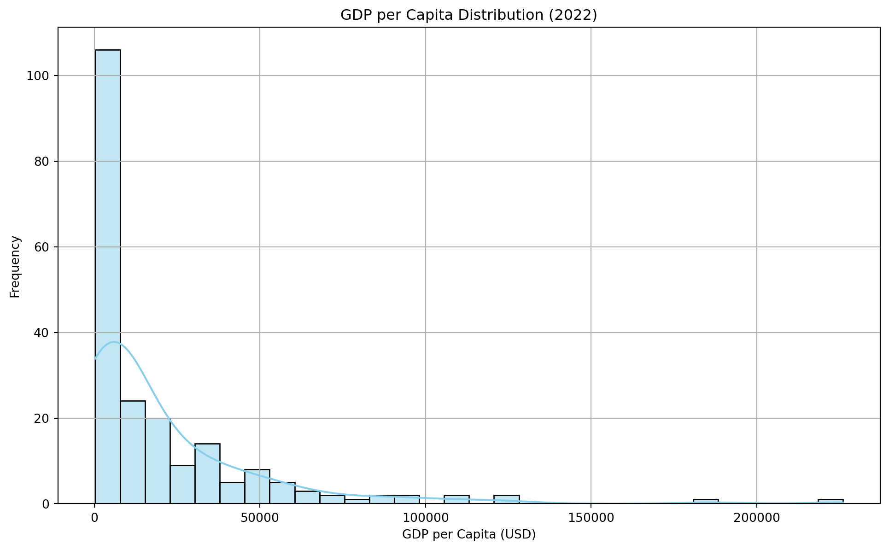

This report analyzes the World Development Indicators dataset for 2022, focusing on socio-economic metrics across countries.
# Load librariesimport pandas as pdimport matplotlib.pyplot as pltimport seaborn as sns# Load datasetdf = pd.read_csv('wdi.csv')# Display first few rowsdf.head()
country
inflation_rate
exports_gdp_share
gdp_growth_rate
gdp_per_capita
adult_literacy_rate
primary_school_enrolment_rate
education_expenditure_gdp_share
measles_immunisation_rate
health_expenditure_gdp_share
income_inequality
unemployment_rate
life_expectancy
total_population
0
Afghanistan
NaN
18.380042
-6.240172
357.261153
NaN
NaN
NaN
56.0
NaN
NaN
14.100
62.879
40578842.0
1
Albania
6.725203
37.197085
4.826688
6846.426143
98.5
96.371231
2.744330
86.0
NaN
NaN
10.137
76.833
2777689.0
2
Algeria
9.265516
30.808979
3.600000
4961.552577
NaN
108.343933
4.749247
79.0
NaN
NaN
12.346
77.129
45477389.0
3
American Samoa
NaN
46.957520
1.735016
18017.458938
NaN
NaN
NaN
NaN
NaN
NaN
NaN
NaN
48342.0
4
Andorra
NaN
NaN
9.564612
42414.059009
NaN
90.147346
2.647290
98.0
NaN
NaN
NaN
NaN
79705.0
Exploratory Data Analysis (EDA)
# Summary statisticsprint("\n--- Summary Statistics ---")print(df.describe())# Check missing valuesprint("\n--- Missing Values ---")print(df.isnull().sum())# Correlation heatmap (numeric columns only)import seaborn as snsimport matplotlib.pyplot as plt# Select only numeric columnsnumeric_df = df.select_dtypes(include=['float64', 'int64'])# Plot heatmapplt.figure(figsize=(12, 8))sns.heatmap(numeric_df.corr(), annot=True, cmap='coolwarm', fmt=".2f")plt.title('Correlation Heatmap of World Development Indicators (2022)')plt.show()
# Bar plot: GDP per capita distributionplt.figure(figsize=(12, 7))sns.histplot(df['gdp_per_capita'].dropna(), bins=30, kde=True, color='skyblue')plt.title('GDP per Capita Distribution (2022)')plt.xlabel('GDP per Capita (USD)')plt.ylabel('Frequency')plt.grid(True)plt.show()

Scatter Plot: Life Expectancy vs GDP per Capita
# Scatter plot: Life Expectancy vs GDP per Capitaplt.figure(figsize=(12, 7))sns.scatterplot(data=df, x='gdp_per_capita', y='life_expectancy')plt.title('Life Expectancy vs GDP per Capita (2022)')plt.xlabel('GDP per Capita (USD)')plt.ylabel('Life Expectancy (Years)')plt.grid(True)plt.show()